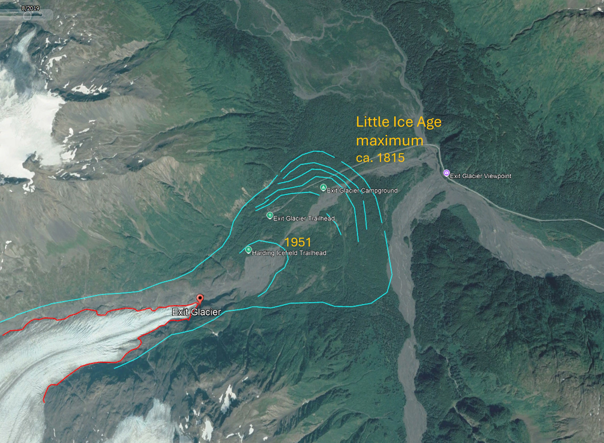

Goodbye, ice
Coming to terms with glacial retreat in an era of rapid environmental change
The great modernist architect Louis Kahn once said “You say to a brick, ‘What do you want, brick?’ And brick says to you, ‘I like an arch.’” What he saw was that even inanimate objects want to be a part of something greater than itself. At the risk of getting too philosophical, I think ice is the same – it wants to be a glacier. I’ve always loved valley glaciers: their ambition is to slip their confines and spread out into a classic piedmont terminus – finally realising their most beautiful shape. I have even made a ‘glacier’ out of bricks at my home in Canberra!
But sadly, while travelling across Alaska and western Canada last year, I was shocked to see how much glaciers that once spread onto valley floors have retreated. Here are a few examples.
Exit Glacier
The Exit Glacier lies approximately 13 km northwest of Seward, Alaska. Arising in the massive Harding Icefield in the Kenai Mountains, the Exit Glacier is a pronounced tongue of ice that flows about 5 km eastward towards the valley of the Resurrection River. From the Exit Glacier trailhead you have a beautiful walk of around 1.5 km to an overlook from which you can see the glacier in the valley below.

While the decline of the glacier between 2010 and 2024 has certainly been significant, the following map reveals that the process has been ongoing since the end of the Little Ice Age in the early 1800s. At its maximum, the glacier would have been a mile-wide wall of ice stretching nearly all the way across the valley, but since then, the terminus has retreated by almost 3 km. It is now a narrow tongue of ice sitting in the bottom of a steep valley, barely visible from the Exit Glacier Viewpoint.

Athabasca Glacier
The Athabasca Glacier is visible from the Icefields Parkway in Alberta, Canada, about half way between Lake Louise and Jasper. The Parkway is easily one of the most beautiful drives I have ever been on, and the winter scenery was spectacular! It is still incredibly impressive, but now you must walk more than 1.5 km from the lower carpark to get to the ice, significantly further than in 1989, when I first visited it.
It is still incredibly impressive, but now you must walk more than 1.5 km from the lower carpark to get to the ice, significantly further than in 1989, when I first visited it. You can see how the ice has retreated in the image below.
Again, however, the Athabasca Glacier was much bigger in the past. As you can see in the image below it extended to the edge of the Icefields Parkway in the early 1900s. Furthermore, this comparison highlights the fact that although it is easy to focus on the retreat of the terminus over time, the decline in ice volume due to thinning is a far better metric of glacial retreat under climate warming.
Matanuska Glacier
Finally, let’s have a look at the Matanuska Glacier a spectacular river of ice that flows out of the northern Chugach Mountains, east of Anchorage, Alaska. I have seen many glaciers in New Zealand, the western USA and southern British Columbia, but at more than 2.5 km across and 40 km long, this glacier is on a different level. In one of my LinkedIn posts I have written about the retreat of the Matanuska Glacier by more than 100 km that has occurred since the end of the Last Glacial Maximum around 18,000 years ago, and particularly about the relatively small change in temperature (2-3 degrees C) involved.
Here the news is somewhat better: although there has been some retreat over the past few decades, the losses have been small compared to the Exit and Athabasca Glaciers, and the Matanuska remains an impressive sight from the Glenn Highway.

Reflection
Today, we are being inundated with a seemingly endless stream of ‘bad news’ stories about climate change, from coral reefs to arctic permafrost, from Australian eucalypt forests to North American deserts. All deserve our attention. But for me the loss of glaciers is perhaps the most painful of all. Glaciers are perhaps the largest things in terrestrial landscapes that are in constant motion - almost like living things - and it seems impossible that something so monumental can eventually disappear … worn down by processes that are scarcely visible in hours or days, but overwhelming when measured in decades. In this way, perhaps, their decline mirrors the totality of human impact on the earth, a process that leaves us all ultimately impoverished.